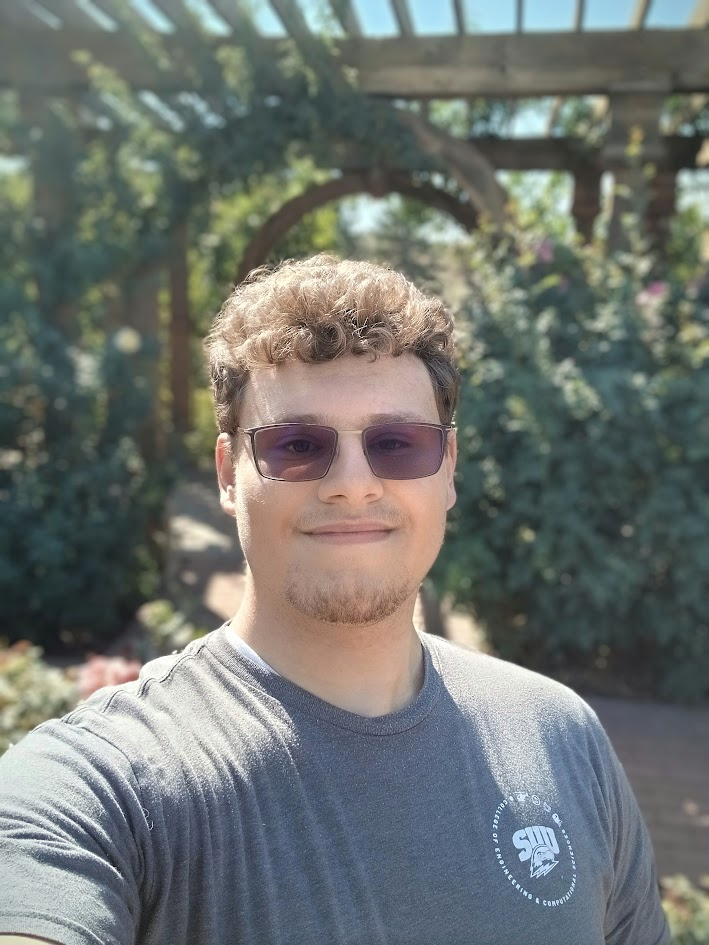

Meet the author
Hyrum Rohrbach: Senior Engineering Director
Hyrum has had a long carrer in the software industry. He first became intrested in php at the age of 12. As he became intrested in progrmaing he began learning logic gates. From a humble begining in minecraft redstone and javascript to the software titan he is today. Having founded many companies before Heavy Metal Crocheters is his new passion project. Hyrum has been credited with the creation of the popular social exmeriment and media platform valued company. He spends his time founding kick staters and has begun to crochet. His other acomplishments are a doctorate in computer science from Southern Utah University, having hiked the highest peak in utah, and being chair member of three companies. (ps. This is where I want to be in 10 years not me now.)
Previous titles
- Senior engineering manager
- Principle engineer
- Senior developer
- Web design consultant